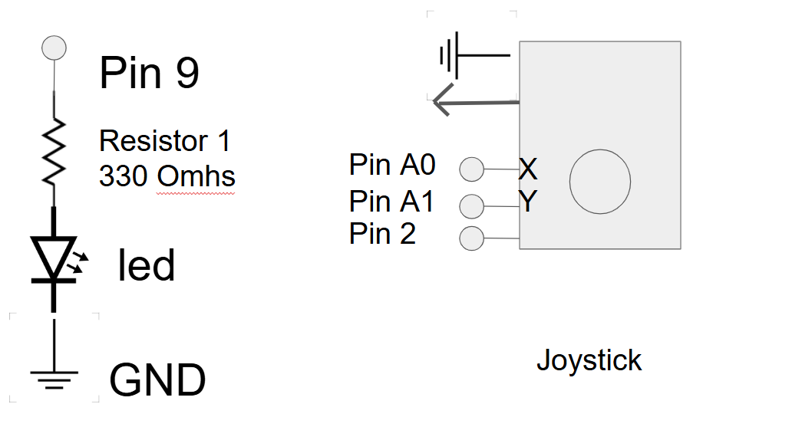
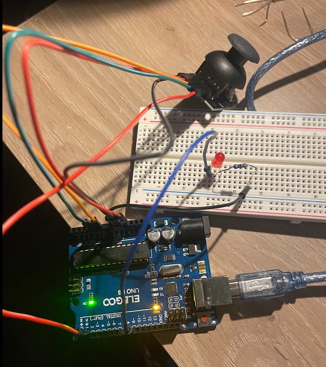

Here is all the documentation for assignment 6
Here is a picture of the schematic used to make the circuit.
A 330Ω resistor was used because a red LED has a voltage drop of 1.8 so 5V - 1.8V = 3.2 Current of the LEDs is 0.02. Using Omh's Law we have 3.2V/0.02 = 160Ω A 330Ω was chosen as the nearest value.
Here is a picture of the circuit used in A6!
Here is a GIF of A6

Gif showing the web/joystick interaction

Gif showing the LED web interaction
Here is the code used for A6: index.js
//Baud rate of the arudino sketch
const BAUD_RATE = 9600;
// Global variables
let port, connectBtn;
// Set the inital position of the ball
let x = 0, y = 0
// Set up function that will create the canvas and set up serial communication
function setup() {
// Sets up serial communication
setupSerial();
// Makes canvas the size of the desktop
createCanvas(windowWidth, windowHeight);
}
// Draw function that will
function draw() {
// Check if the port is open
const portIsOpen = checkPort();
// Close the draw loop if the port is closed
if (!portIsOpen) return;
// Read from the port until a new line is found, name it str
let str = port.readUntil("\n");
// Close the readUntil function if nothing is read
if (str.length == 0) return;
// Split str into an array separated by commas
let arr = str.trim().split(","); // Split the string by commas
// Map the first value of the array (X) to the windowWidth
x = map(Number(arr[0]), 0, 1023, 0, windowWidth);
// Map the second value of the array (Y) to the windowHeight
y = map(Number(arr[1]), 0, 1023, 0, windowHeight);
// Map the third value of the array to the ball diameter
diameter = map(Number(arr[2]), 0, 1023, 10, 40);
// Set the background to a light grey
background(220);
// Create a circle with the mapped X and Y coordinate with mapped diameter
circle(x, y, diameter);
}
// Creates a function where if the key is pressed, will write to arduino to execute command
function keyPressed() {
// 97 is the "a" key
port.write(97);
}
// Helper functions for managing the serial connection
function setupSerial() {
// Names create serial function as port
port = createSerial();
// Check for previously used ports
let usedPorts = usedSerialPorts();
// If there are more than 0 ports in use then open the first one
if (usedPorts.length > 0) {
// Open the most recent port and insert baud rate
port.open(usedPorts[0], BAUD_RATE);
}
// Create a connect button that says "connect to Arduino"
connectBtn = createButton("Connect to Arduino");
// Put the botton in the 5,5 position
connectBtn.position(5, 5);
// If clicked execute the onConntectButtonClicked function
connectBtn.mouseClicked(onConnectButtonClicked); // Attach the click event handler
}
// If the port is not open then keep existing message
function checkPort() {
// If the port is opened function
if (!port.opened()) {
// Keep the same message if not open
connectBtn.html("Connect to Arduino");
// Grey background
background("gray");
// Boolean return as false to keep the port as closed
return false;
// Else statement if the port is open then swap to disconnect message
} else {
// Disconnect statement
connectBtn.html("Disconnect");
// Boolean return as true to keep port open
return true;
}
}
// Function to open and close the serial port when clicked
function onConnectButtonClicked() {
// If statement where if the port is not opened then open it
if (!port.opened()) {
// Give the open port the baud rate
port.open(BAUD_RATE);
// Else close the port
} else {
port.close(); // Close the port
}
}
Here is the code used for A6: sketch.ino
//This code will loop over and send the joystick controls to serial and control the LED
void setup() {
// Set baud rate to 9600
Serial.begin(9600);
// Set up pin 9 to be an output pin
pinMode(9, OUTPUT);
// Wait for 10 miliseconds
Serial.setTimeout(10);
}
// Loop that will send joystick and LED readings
void loop() {
// If there is any serial data to be read from web then initate
if (Serial.available() > 0) {
// Read the serial data
int inByte = Serial.read();
// If the serial data is ASCII 97 ("a") then turn on pin 9 to high
if (inByte == 97) {
// Turn on pin 9 to High
digitalWrite(9, HIGH);
// Wait for 100 ms
delay(100);
// Turn pin 9 to LOW
digitalWrite(9, LOW);
}
}
// Read A0 as the x coordinate of the joystick
int xValue = analogRead(A0);
// Read A1 as the y coordinate of the joystick
int yValue = analogRead(A1);
// Read A2 as the z axis
int zValue = analogRead(A2); // Read another analog value for size control (Z-axis)
// Send the coordinates as a comma separated list
Serial.print(xValue);
// Comma same line
Serial.print(",");
// y-axis value same line
Serial.print(yValue);
// Comma same line
Serial.print(",");
// z-axis value same line
Serial.println(zValue);
// Wait 50 ms for next reading
delay(50);
}